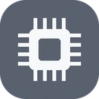
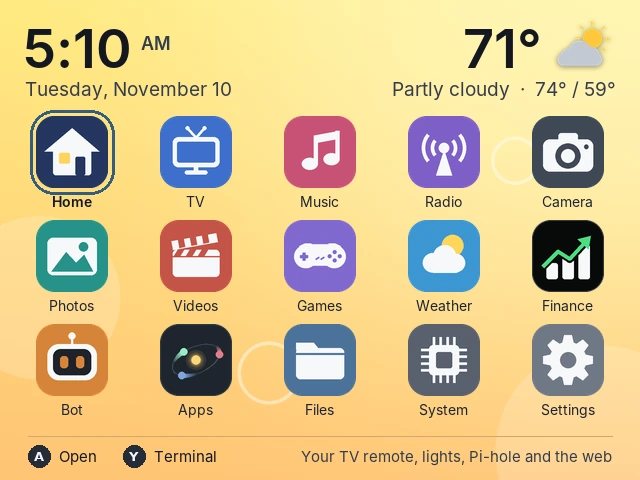
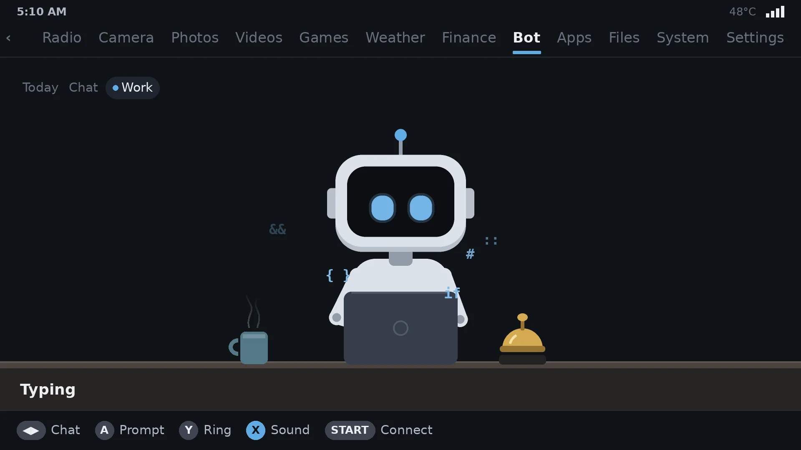
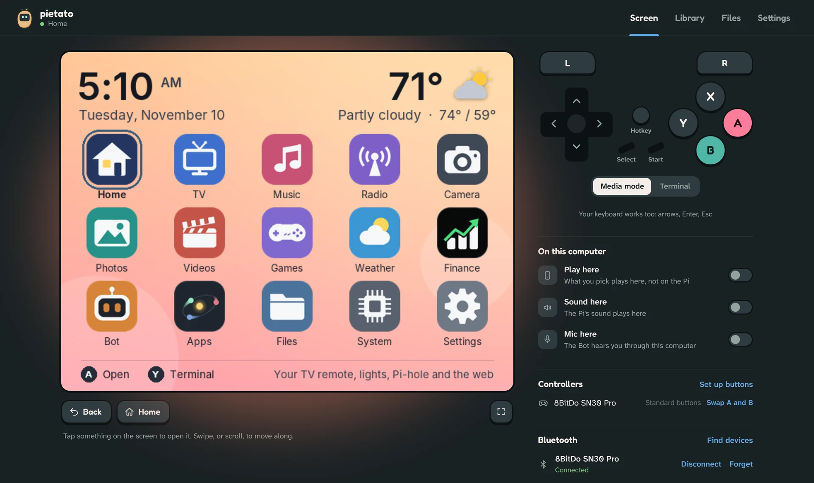
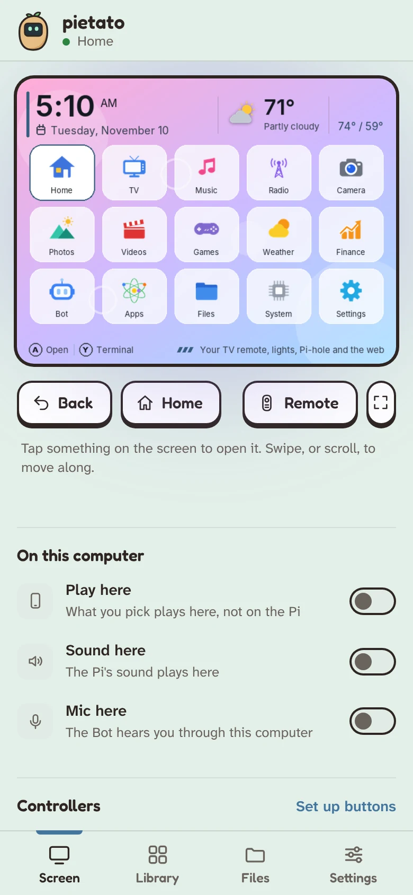

A Raspberry Pi project
If you have a Pi and a controller, Pietato puts live TV, videos, music, radio, photos, your smart home and the games you own on one home screen. It works on a PC with Ubuntu or Debian too, and in a GPi Case.
Free and open source, MIT licensed.
Press L or R to switch apps, the same as on your controller.
A Zero 2 W, 3, 4, 5 or Compute Module 4. A PC with Ubuntu 24.04 or Debian 12 or 13 works too, and so does an R36S.
Any USB or Bluetooth one. A keyboard works too, and two can play on two controllers.
Any TV or monitor on HDMI. In a GPi Case 2W or GPi Case 2, it uses the case's own screen and buttons.
Move with the d-pad and press A to open. Here they are, in the order they sit on the home screen.
A remote for your TVs and lights through Home Assistant, your Pi-hole's stats, and the web.
Plex and Jellyfin, about 250 old cartoons and 150 old films, and your own streams.
Your songs, with a quiet lofi scene for the whole screen while they play.
Internet radio by kind of music, or search for a station by name.
A USB camera, any camera on your network, or the ones on your other Pis. The d-pad steers an OBSBOT.
Your pictures, with filters and a slideshow.
Your videos, picking up where you left off.
Snake, and the games you own, from Game Boy and NES to PlayStation.
Now, the next hours and the week, in °F or °C.
Stock and coin prices, with their charts.
Sets timers, keeps your list and plays music when you ask.
A clock, notes, a fish tank, Game of Life and more to leave running.
PDFs, documents, pictures, video and music, on the Pi or on your other computers.

Temperature, memory, storage and network at a glance, and Update software.
WiFi, Bluetooth, sound, and the home screen's style, background and colours.
N64, PSP, DS and Dreamcast games play on a Pi 4 or 5 or a PC, and PlayStation 2, GameCube and Wii games on a PC.
Join a game on another as player 2, link two Game Boy games to trade Pokémon, or work one with another's buttons. Your saves follow you.
Hold Home and press a code of your own to turn the TV on, the lights off, or start your last game.
If you have a RetroFlag GPi Case 2W or GPi Case 2, Pietato uses the case's own screen and buttons, so it's a media center you can carry around.


Ask it to set a timer, add milk to your list or play some music. Type it, or say it into a USB mic. With Ollama on another computer, it chats too.
Open your-pi-address:5432 in a browser on your WiFi. You get the Pi's screen to tap, a remote beside it, and a place to add files and change any setting. On a phone, add it to your home screen and it opens like an app.


Pick the way that suits you. To update later, press Update software at the top of System.
hdmi for a TV or monitor, or gpi-case-2w or gpi-case-2 for a GPi Case.On Raspberry Pi OS Lite, a PC with Ubuntu 24.04 or Debian 12 or 13, or an R36S:
git clone https://github.com/frogCaller/Pietato.git cd Pietato sudo bash setup.sh
It asks a few questions first, then Default puts in everything your Pi can run, or Custom lets you pick. The first time takes a while (an hour or more on a Pi 4 with everything in), so leave it on until it says All set.